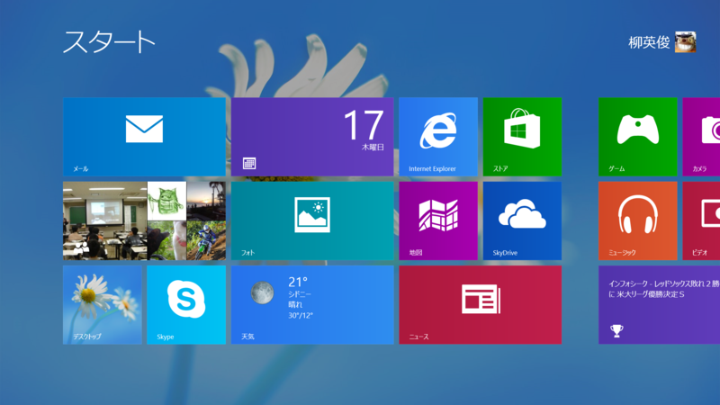
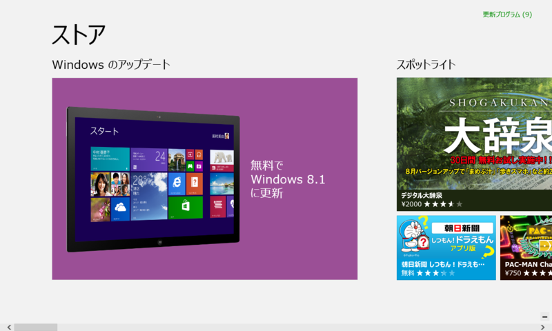
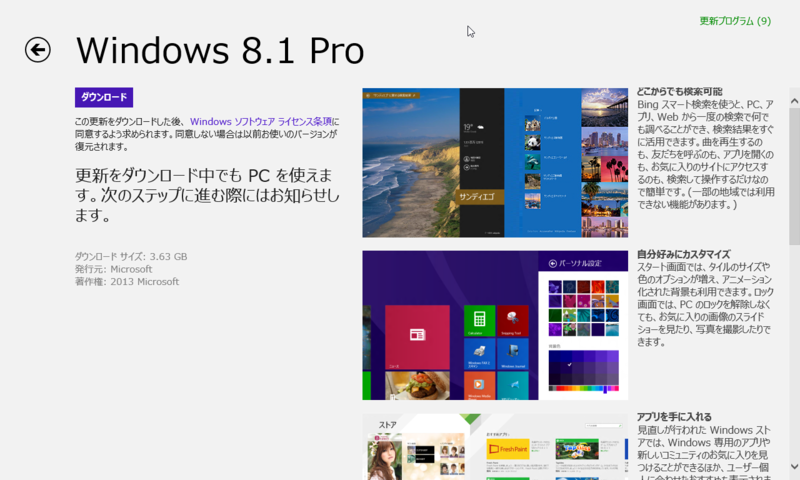
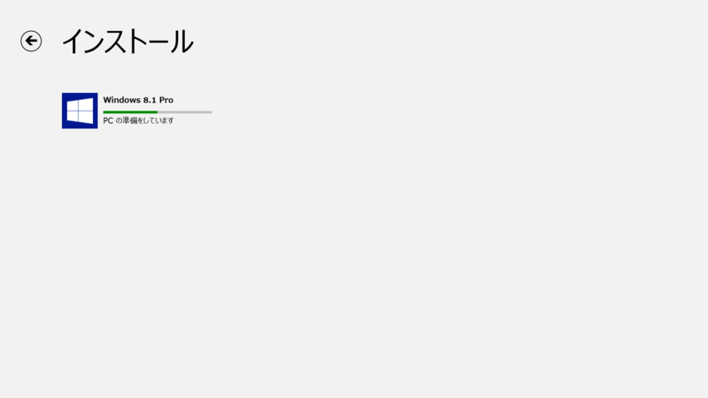
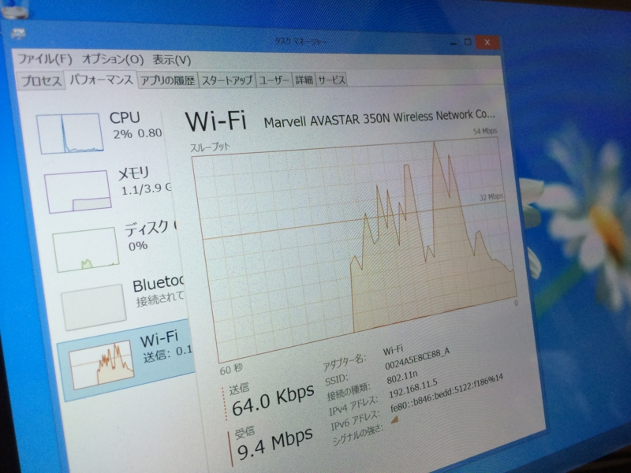
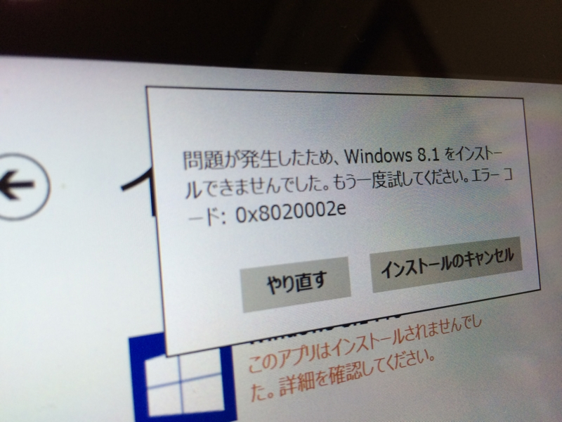
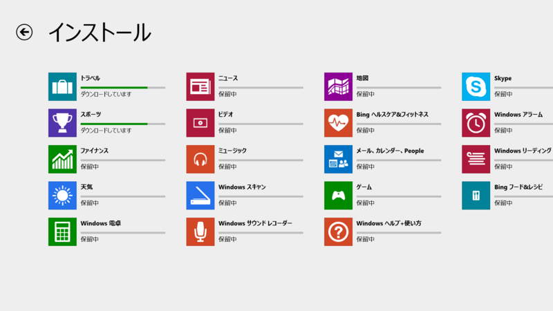
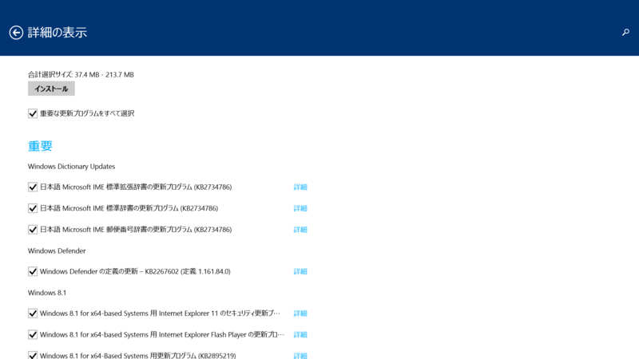

Windows 8.1 をさっそく入れてみた。
公開日：

日本マイクロソフト株式会社は17日、最新OS「Windows 8.1」の一般提供を開始した。17日午後8時には、Windows 8ユーザー向けにWindows 8.1への無償アップデートをオンラインのWindowsストアで公開。18日にはWindows 8.1のパッケージ製品や搭載PCの店頭販売が始まり、秋葉原では17日深夜から販売イベントが開催される。
もちろん、さっそく入れるわけですよ。
下準備
今回実験台となるのは、以下の2台。
- Surface Pro（Windows 8.1 Pro RTM → Windows 8 Pro）
- Surface RT（Windows 8.1 RT Preview）
プレーンな Windows 8 からのアップデートシーケンスを体験したかったというのと、余計なトラブルは御免だという理由で、Surface Pro は Windows 8 Pro へ初期化してある（ユーザーデータはクラウドに退避済み！）。Windows 8.1 RT を Windows RT へ戻すのは断念。リカバリディスクを作成していない場合、ロールバックは困難なようだ。
@daruyanagi 僕の理解ではx86のデバイスはリカバリー領域まで書き換えないから8に戻れる、ARMのRTはリカバリー領域を書き換えるからRT8には戻れない、です
2013-10-17 18:04:09 via TweetDeck to @daruyanagi
もちろん、自分はリカバリディスクなんか作ってないわけで（ぉ

Windows を最新の状態にして「ストア」を起動すると、Windows 8.1 のインストールが案内されるはず。うちの環境では Surface Pro にはすぐ来たのだけど、Surface RT にはなかなか来ない。個体差があるのか、Preview 版なのが問題なのか……。
追記（2013/10/18 1:07）
PreviewからRTMへのアップグレードはISOイメージが必要なようでSurface RTをはじめとするWindows RT機はどうするの？というと実は直リンクがあったりします。
[Windows8]Windows RT 8.1 PreviewでRT 8.1 RTMがストアに表示されずに困った時の対処法
@daruyanagi むちゃくちゃ確実ですｗ
2013-10-18 01:07:09 via web to @daruyanagi
アザッす！！
ストアで Windows 8.1 へのアップデートを選択するとこんな画面になり、ダウンロードとインストールが可能となる。

Media Center Edition を使ってる人は、ココの表記が少し違うようだ。どちらにしろ、このままインストールを進めればいい。
祈る

ここから先は Surface Pro を前提に。
うちの環境ではダウンロードで 10Mbps 程度出て快適だった（午後8時頃）。

途中“0x8020002e”というエラーがでて一度インストールが止まったが、これは接続エラーらしく、再試行すれば問題なくインストール処理は完了した。
アップデート

インストール直後だったけれど、「ストア」のアップデートをチェックしてみた……ら、わんさかあった。

Windows Update もなかなか溜まってる。これ以外にも RTM → GA でいろいろ変更点があるみたいだけど（だったら RTM ってなんなんだよ！）、それはおいおい検証していこうかな、と思う。今日のところはここまで。